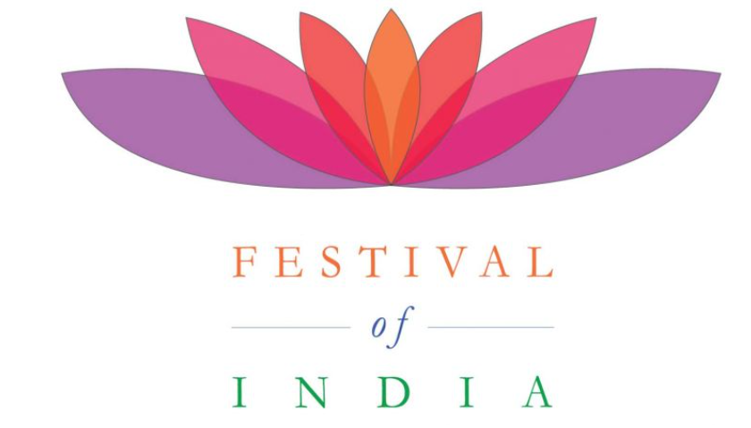

|  |
| Home | Holi | Diwali | Ugadi | Navratri | Onam | Pongal | Ganesh Chaturthi | Maha Shivratri | Janmashtami |
Navaratri is an annual Hindu festival observed in honor of the goddess Durga, an aspect of Adi Parashakti, the supreme goddess. It spans over nine nights (and ten days), first in the month of Chaitra (March/April of the Gregorian calendar), and again in the month of Ashvin (September–October). It is observed for different reasons and celebrated differently in various parts of the Hindu Indian cultural sphere. Theoretically, there are four seasonal Navaratris. However, in practice, it is the post-monsoon autumn festival called Sharada Navaratri. There are 2 Gupta Navaratris or "Secret Navaratris" as well, one starting on the Shukla Paksha Pratipada of the Magha Month (Magha Gupta Navaratri) and another starting in the Shukla Paksha Pratipada of Ashadha Month.
Celebrations include worshipping nine goddesses during nine days, stage decorations, recital of the legend, enacting of the story, and chanting of the scriptures of Hinduism. The nine days are also a major crop season cultural event, such as competitive design and staging of pandals, a family visit to these pandals, and the public celebration of classical and folk dances of Hindu culture. Hindu devotees often celebrate Navaratri by fasting. On the final day, called Vijayadashami, the statues are either immersed in a water body such as a river or ocean, or the statue symbolising the evil is burnt with fireworks, marking the destruction of evil. During this time preparations also take place for Deepavali (the festival of lights) which is celebrated twenty days after Vijayadashami.